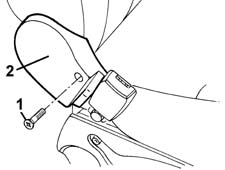
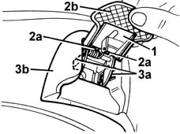
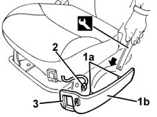

7045A42 l/h or r/h front seat guard (one) - r+r
- Path
- Procedures > 70 FITTINGS > 7045 FRONT SEATS > 7045A front seat assembly > 7045A42 l/h or r/h front seat guard (one) - r+r
- Kind
- repair procedure (removal / refitting; the operation number is the code)
- Applies to
- all engines; all production periods
- Interactive page
- https://sloeber94.github.io/elrnDB-fMltpl/en/#/2892228
Applies to: all engines; all production periods
 Removing
Removing
 Refitting
RefittingFor seats without electrical lifting device, proceed as follows.
Slide the seat into a suitable position.
1. Undo the bolt.
2. Remove the shield.

Applies to: all engines; all production periods
For seats with electrical lifting device, proceed as follows.
Slide the seat into a suitable position.
1. Raise the lever and lower the squab to the end of its travel.
2. Using a screwdriver, disengage the retainers (2a), then remove the lever trim (2b).
3. Using a screwdriver, disengage the retainers (3a) of the shield (3b).

Applies to: all engines; all production periods
1. Remove the retainers (1a) using the appropriate tool and move the shield (1b) slightly.
 | Name | Country |
|---|---|---|
1a | Scraper blade | 1.878.077.000 |
2. Disconnect the electrical connection.
 | Name | Connector |
|---|---|---|
2 | Driver's seat lift switch |
3. Recover the guard.

Applies to: all engines; all production periods
Refitting
RemovingCheck that the guard is undamaged.
Refit the shield, proceeding in the same way as for removal.
Topics linked from this page (1)
Topics that link to this page (9)
- 5580C44 front side bag module one lh or rh r r
- 5580C86 side bag wiring harness (one) lh or rh - r r or replace
- 7045A14 Front seat CUSHION ASSEMBLY (one), left or right - R.R.
- 7045A15 Front seat CUSHION - CENTRE SECTION - (one), left or right - R.R.
- 7045A18 FRONT SEAT BACKREST ASSEMBLY (ONE), LEFT OR RIGHT - R.R.
- 7045A19 BACKREST - CENTRE SECTION - front seat (one, left or right - R.R .
- 7045A94 Centre front seat COVER - R.R. with seat removed
- 7045A95 Centre front seat COVER - R.R.
- 7045J10 switch unit for movement of one front seat, l/h or r/h - r+r for check